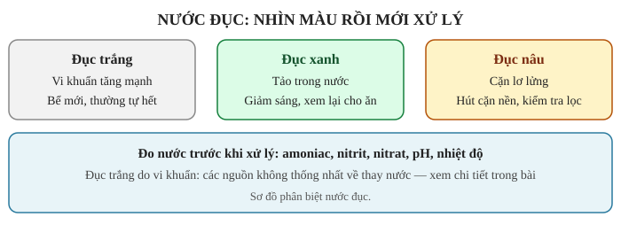

Nước bể đục trắng, đục xanh: phân biệt màu nước rồi mới xử lý
Tác giả: Nguyễn Trung Đức
Nước bể đang trong bỗng đục là lúc người mới dễ làm sai nhất. Nước đục trắng thì vội thay gần hết nước. Nước đục xanh thì vội cho thuốc diệt rêu. Nước đục vì nền mới đổ thì vội rửa lọc thật sạch. Ba cách xử lý đó nghe đều hợp lý, nhưng mỗi cách chỉ đúng cho một loại đục, và dùng sai loại có thể làm bể tệ hơn: thay nước lớn trong lúc vi khuẩn đang bám vào lọc có thể kéo dài thời gian bể ổn định, rửa lọc dưới vòi có thể giết vi khuẩn có ích, còn chờ đợi trong khi nước xanh do tảo thì thường không làm nước tự trong lại.
Bài này không đưa ra một cách xử lý chung cho mọi loại nước đục. Bài giúp bạn phân biệt nước đục theo màu và theo thời điểm xuất hiện, đo nước trước khi quyết định, rồi chọn đúng việc cần làm cho từng trường hợp: trường hợp nào chỉ cần chờ, trường hợp nào cần thay nước, trường hợp nào cần tắt đèn vài ngày hoặc dùng thiết bị diệt tảo lơ lửng, và trường hợp nào cần hỏi bác sĩ thú y chuyên về cá. Bài không chẩn đoán bệnh cho cá và không kê thuốc. Khi cá có dấu hiệu nặng, bài này chỉ hướng bạn tới việc đo nước và hỏi người có chuyên môn.
Bước đầu tiên: múc nước ra cốc trắng và đo nước
Trước khi làm bất cứ việc gì, hãy làm hai việc đơn giản mà nhiều người bỏ qua. Thứ nhất, múc một cốc nước bể ra cốc trắng hoặc cốc trong suốt rồi đặt lên nền trắng. Đổ mẫu nước vào cốc trắng để nhìn rõ màu (AquaCompat dẫn hướng dẫn của Aquarium Co-Op). Trong bể, ánh đèn và màu nền có thể làm bạn nhìn nhầm màu nước. Trong cốc trắng, nước đục trắng sẽ hiện ra như sữa pha loãng, nước đục xanh sẽ hiện ra màu xanh nhạt tới xanh như nước đậu, nước vàng nâu sẽ hiện ra màu trà, còn nước xám bụi sẽ có những hạt nhỏ lơ lửng rồi lắng dần xuống đáy cốc.
Thứ hai, đo amoniac, nitrit, pH và nhiệt độ, ghi lại con số và giờ đo. Nước đục chỉ là manh mối, không phải kết quả đo nước (AquaCompat viết rõ như vậy). Một bể nước đục trắng có thể chỉ là vi khuẩn đang phát triển trong khi amoniac và nitrit vẫn ở mức an toàn, nhưng cũng có thể là dấu hiệu bể chưa chạy lọc xong và hai chỉ số đó đang cao. Chỉ có bộ test mới phân biệt được hai trường hợp đó. Mức an toàn cho amoniac và nitrit là 0 mg/L (RSPCA), và đây là con số đã dùng thống nhất trong toàn bộ website này, từ Cách xử lý nước mới trước khi thả cá tới Vì sao cá neon chết hàng loạt sau 1 tuần. Nếu bạn chưa có bộ test, hãy coi việc mua bộ test là bước đầu tiên, trước cả việc mua thuốc làm trong nước.
Trong lúc chờ kết quả đo, hãy quan sát cá. Cá bơi bình thường, ăn bình thường và nước chỉ hơi đục thì tình huống khác hẳn với cá ngoi lên mặt nước thở gấp, bỏ ăn hoặc nằm một góc trong khi nước đục. Nước đục tự nó hiếm khi là mối nguy trực tiếp; thứ đi kèm với nó mới có thể gây hại, ví dụ oxy hòa tan thấp hoặc amoniac và nitrit cao (AquaCompat). Vì vậy bài này luôn đặt câu hỏi "cá thế nào, số đo ra sao" trước câu hỏi "nước màu gì".
Bảng phân biệt nhanh: màu nước nói lên điều gì

Bảng dưới đây tóm tắt cách phân biệt của AquaCompat, tổng hợp từ Practical Fishkeeping, Aquarium Co-Op và AquariumScience.org. Bảng dưới đây xếp các dấu hiệu đã kiểm chứng thành lựa chọn thực tế cho người mới. Mỗi dòng trong bảng sẽ được giải thích kỹ ở các mục sau.
| Bạn nhìn thấy gì | Khả năng cao nhất | Thường xuất hiện khi nào | Cách xử lý thường dùng |
|---|---|---|---|
| Trắng sữa, như sữa pha loãng | Vi khuẩn trong nước tăng mạnh (bacterial bloom) | Bể mới đang chạy lọc, sau khi cho ăn quá nhiều, sau khi vệ sinh hoặc thay toàn bộ vật liệu lọc | Cho ăn ít lại, để lọc chạy, chờ 1–2 tuần; chỉ thay nước nhiều khi số đo xấu |
| Trắng xám, có hạt bụi lơ lửng | Hạt nhỏ từ nền, vật liệu lọc mới hoặc nền bị khuấy lên | Ngay sau khi đổ nước lần đầu, sau khi vệ sinh nền, khi cá đào nền | Lọc cơ học mịn, chờ 1–2 ngày cho hạt lắng và được lọc giữ lại |
| Xanh nhạt tới xanh như nước đậu | Tảo lơ lửng trong nước (tảo đơn bào) | Bật đèn quá lâu, bể gần cửa sổ, dinh dưỡng dư thừa | Giảm giờ đèn, che nắng, thay nước một phần, tắt đèn vài ngày hoặc dùng đèn UV diệt tảo lơ lửng |
| Vàng nâu, trong nhưng đổi màu | Tanin từ lũa hoặc lá cây | Sau khi cho lũa, lá vào bể | Thay nước, than hoạt tính nếu bạn không muốn màu này |
| Sương trắng như bọt khí li ti | Khí hòa tan trong nước mới | Bể vừa đổ nước lạnh, mới thay nước lớn | Chờ khoảng 24 giờ; nếu không hết thì kiểm tra đầu nối lọc có hút khí không |
| Trắng đục sau khi cho thuốc hoặc bột điều chỉnh pH | Kết tủa hóa học | Sau khi dùng thuốc quá liều hoặc bột chưa tan hết | Thay nước một phần, kiểm tra lại liều đã dùng |
Một lưu ý quan trọng: màu nước có thể thay đổi theo thời gian. Nước đục trắng vì vi khuẩn trong tuần đầu có thể chuyển sang đục xanh sau đó nếu bạn bật đèn quá lâu và cho ăn nhiều. Vì vậy đừng chỉ nhìn màu một lần rồi kết luận. Hãy ghi lại màu nước, ngày xuất hiện và số đo mỗi ngày vào sổ theo dõi bể, như mẫu nhật ký trong phụ lục của website. Khi bạn mang sổ này tới cửa hàng hoặc tới bác sĩ thú y chuyên về cá, họ sẽ hiểu bể của bạn nhanh hơn rất nhiều so với việc bạn chỉ nói "nước đục".
Nước đục trắng sữa: vi khuẩn đang tăng mạnh trong bể mới
Đây là loại nước đục thường gặp nhất ở bể mới, và cũng là loại dễ làm người mới hoảng nhất. Bạn vừa mua bể, vừa thả cá, nước đang trong thì sau vài ngày nước chuyển sang trắng sữa như có người đổ sữa vào. Nếu bể của bạn dưới sáu tuần tuổi và nước chuyển sang trắng sữa trong một hoặc hai tuần đầu sau khi thả cá, gần như chắc chắn đó là vi khuẩn trong nước tăng mạnh (App-Aquatic). Hiện tượng này thường tự hết trong một tới hai tuần nếu bạn cho ăn ít lại và để yên lọc (AquaCompat). Khoảng hẹp hơn là thường hết trong 2–10 ngày khi chu trình ổn định (App-Aquatic ghi như vậy). Hai khoảng này không mâu thuẫn nhau: khoảng 2–10 ngày là khoảng thường gặp khi bể chạy lọc thuận lợi, còn 1–2 tuần là khoảng rộng hơn khi bể chạy lọc chậm hơn hoặc cá đã ở trong bể.
Vì sao vi khuẩn tăng mạnh? Khi bể mới chưa có đủ vi khuẩn bám trong lọc để xử lý chất thải, chất hữu cơ từ thức ăn thừa và chất thải của cá tích tụ trong nước. Vi khuẩn lơ lửng trong nước nhân lên rất nhanh để ăn lượng chất hữu cơ đó, và chính đám vi khuẩn lơ lửng đó làm nước đục. Đây là một phần của quá trình chạy lọc, không phải dấu hiệu bể bẩn theo nghĩa bạn lau bể chưa sạch. Chu trình nitơ đầy đủ — amoniac thành nitrit rồi thành nitrat — đã được giải thích ở Cách xử lý nước mới trước khi thả cá, và bài này chỉ nhắc ngắn: bể mới chưa có đủ vi khuẩn trong lọc, vì vậy amoniac có thể tăng lên trong khi vi khuẩn lơ lửng đang làm nước đục.
Cách xử lý đúng cho trường hợp này là làm ít, không phải làm nhiều. Để lọc chạy, cho ăn ít lại, tránh thay nước lớn và tránh dùng đèn UV trong lúc bể đang chạy lọc, vì hai việc đó có thể kéo dài thời gian vi khuẩn bám vào lọc (AquaCompat dẫn Aquarium Co-Op và AquariumScience.org). Trong lúc vi khuẩn tăng mạnh, hãy cho ăn ở mức tối thiểu — cách ngày một lần là đủ cho hầu hết cá trưởng thành — vì thức ăn ít hơn nghĩa là amoniac ít hơn, và vi khuẩn trong nước sẽ hết nhanh hơn (App-Aquatic). Cá của bạn sẽ không chết đói vì ăn cách ngày trong một tuần, nhưng cá có thể chết vì amoniac nếu bạn tiếp tục cho ăn nhiều trong bể chưa chạy lọc xong.
Có hai việc tuyệt đối không nên làm trong lúc này. Thứ nhất, đừng rửa vật liệu lọc dưới vòi nước máy. Bọt lọc và vật liệu lọc gốm là nơi vi khuẩn cần bám vào, và rửa chúng dưới vòi — dù chỉ rửa nhanh — cũng giết vi khuẩn nhạy cảm với clo và làm chu trình bắt đầu lại từ đầu (App-Aquatic). Không bao giờ rửa bọt lọc dưới vòi (RSPCA cũng dặn như vậy). Nếu cần rửa vật liệu lọc, hãy rửa nhẹ trong nước bể đã hút ra khi thay nước. Thứ hai, đừng thay toàn bộ nước vì muốn nước trong ngay. Thay nước lớn trong lúc vi khuẩn đang tăng mạnh chỉ làm nước trong tạm thời, rồi vi khuẩn lại nhân lên, và việc thay nước lớn còn có thể làm chậm quá trình vi khuẩn bám vào lọc (AquaCompat).
Vậy khi nào thì thay nước trong lúc nước đục trắng? Câu trả lời phụ thuộc vào số đo, không phụ thuộc vào màu nước. Nếu amoniac tăng trên 1,0 mg/L, hãy thay nước nhỏ 20–25% mỗi hai tới ba ngày (App-Aquatic). Thay 25% nước mỗi ngày trong một tuần khi nước đục sinh học đi kèm với số đo nước xấu (Practical Fishkeeping khuyên như vậy, qua AquaCompat). Hai hướng dẫn này khác nhau về tần suất, nhưng cùng một nguyên tắc: khi số đo xấu và cá đang ở trong bể, hãy bảo vệ cá bằng cách thay nước một phần, đừng chờ vi khuẩn tự hết trong khi amoniac đang cao. Khi số đo vẫn ở 0 mg/L và cá bơi bình thường, bạn có thể chờ và chỉ thay nước nhỏ theo lịch thường lệ. Nếu amoniac và nitrit cao hơn mức an toàn, cần thay một nửa lượng nước mỗi ngày và tiếp tục đo cho tới khi điều kiện cải thiện (RSPCA). Ba nguồn này không đưa ra một con số duy nhất cho mọi bể, vì vậy bài này không chọn một con số rồi khẳng định đó là quy tắc cho mọi trường hợp. Bài khuyên bạn thay nước một phần, đúng nhiệt độ, đã khử clo, và đo lại sau mỗi lần thay.
Một trường hợp cần phân biệt: nước đục trắng ở bể đã chạy ổn định nhiều tháng. Nếu bể đã chạy nhiều tháng mà đột nhiên đục trắng, vi khuẩn tăng mạnh vẫn có thể xảy ra, nhưng lúc này đó là dấu hiệu cảnh báo chứ không phải giai đoạn bình thường (App-Aquatic). Các nguyên nhân thường gặp là thả quá nhiều cá cùng lúc, cá chết mà bạn không phát hiện và đang phân hủy sau đồ trang trí, cho ăn quá nhiều, dùng thuốc làm chết vi khuẩn trong lọc, hoặc thay toàn bộ vật liệu lọc cùng lúc mà không giữ lại vật liệu cũ. Trong trường hợp này, hãy đo amoniac và nitrit ngay. Nếu một trong hai chỉ số trên 0 mg/L ở bể đã ổn định, bạn đang có vấn đề cần xử lý (App-Aquatic). Hãy tìm cá chết, vớt thức ăn thừa, kiểm tra lại lần thay vật liệu lọc gần nhất, rồi xử lý nước theo số đo như ở mục trên. Đừng chỉ chờ nước tự trong, vì bể đã ổn định mà đục trở lại thường có nguyên nhân cụ thể cần tìm ra.
Nước đục xám, có hạt: nền chưa rửa sạch hoặc nền bị khuấy lên
Nước đục xám khác nước đục trắng sữa ở chỗ bạn có thể thấy hạt nhỏ lơ lửng, và nước thường đục ngay sau khi bạn đổ nước, thay nền hoặc vệ sinh nền. Nước đục xám gần như luôn là vấn đề vật lý: hạt nhỏ lơ lửng trong nước chứ không phải sinh vật sống (App-Aquatic). Nguyên nhân thường gặp nhất ở bể mới là bụi từ nền chưa rửa sạch. Cát, sỏi, và đặc biệt là nền hạt mịn sẽ thả ra hạt li ti khi mới ngập nước, và những hạt này có thể mất vài ngày mới lắng xuống dù lọc đang chạy tốt.
Trong bể đã ổn định, nước đục xám thường có nghĩa là có thứ gì đó đã khuấy nền lên: bạn vừa hút nền mạnh tay, vừa cho đồ trang trí mới vào, hoặc cá đào nền làm tung chất thải đã lắng dưới nền. Trường hợp này thường không gây hại cho cá, nhưng nó cho thấy lọc của bạn đang phải làm việc nhiều hơn bình thường để giữ lại hạt (App-Aquatic).
Cách xử lý cho nước đục xám đơn giản hơn nhiều so với nước đục trắng sữa. Hạt nhỏ cần lọc cơ học mịn: bông lọc mịn hoặc chất làm trong nước giúp hạt kết lại để lọc giữ được (AquaCompat). Khi lắp bể mới dùng cát hoặc nền mịn, hãy đổ nước chậm qua đĩa hoặc qua bàn tay để giảm khuấy nền, và dù làm cẩn thận thì vẫn nên tính trước 24–72 giờ nước xám trước khi nước trong lại (App-Aquatic). Bảng của AquaCompat ghi hạt nhỏ thường hết trong 1–2 ngày — hai khoảng này trùng nhau, vì 24–72 giờ là 1–3 ngày. Một tấm bông lọc mịn đặt ở tầng cuối của lọc sẽ giúp bắt hạt nhanh hơn. Nếu nước đục xám kéo dài trong bể đã ổn định, hãy kiểm tra lưu lượng lọc có đủ cho thể tích bể không. Quy tắc chung cho bể cộng đồng là lọc nên luân chuyển 4–6 lần thể tích bể mỗi giờ (App-Aquatic nêu như vậy). Bài này trình bày con số đó đúng như nguồn ghi — một quy tắc chung, không phải quy tắc đo cho từng loại lọc — và khuyên bạn đối chiếu với thông số của lọc mình đang dùng, thay vì mua lọc mới chỉ vì một con số.
Một lỗi người mới hay mắc là rửa nền bằng xà phòng hoặc chất tẩy để nền sạch hơn. Đừng làm vậy. Bài xử lý nước đã viết: rửa nền, đá, lũa và cây bằng nước sạch, không dùng xà phòng hay chất tẩy. Xà phòng còn sót lại trong nền có thể gây hại cho cá và vi khuẩn trong lọc. Cách rửa nền đúng là rửa bằng nước sạch nhiều lần cho tới khi nước rửa trong hơn, rồi mới cho nền vào bể.
Nước đục xanh: tảo lơ lửng, không tự hết nếu không sửa nguyên nhân
Nước đục xanh là loại nước đục khác hẳn hai loại trên. Nước xanh do tảo đơn bào lơ lửng trong nước, thường là tảo Euglena hoặc tảo phù du tương tự, và không giống rêu bám trên kính hay đồ trang trí: bạn cọ kính cũng không làm nước hết xanh (App-Aquatic). Nước xanh cần đèn UV diệt tảo lơ lửng rồi thay nước để loại tảo đã chết (AquaCompat). Hai nguồn đều đồng ý một điểm: nước xanh hiếm khi tự hết nếu bạn không sửa nguyên nhân gây ra nó.
Nguyên nhân của nước xanh là ánh sáng quá nhiều, dinh dưỡng dư thừa, hoặc cả hai. Các trường hợp thường gặp: bể đặt gần cửa sổ có nắng trực tiếp hoặc nắng gián tiếp mạnh, đèn bật 10–14 giờ mỗi ngày trong khi mức thường dùng cho bể cộng đồng và bể cây là khoảng 8 giờ, nitrat cao do thay nước không đều hoặc nuôi quá nhiều cá, và cho ăn quá nhiều làm tăng photphat (App-Aquatic liệt kê như vậy). Chu kỳ đèn 8–10 giờ mỗi ngày, tắt vào ban đêm, là phù hợp cho hầu hết loài cá, và đừng đặt bể cạnh cửa sổ vì nắng có thể làm nước nóng lên tới mức nguy hiểm (RSPCA). Chọn bể cá đầu tiên: kích thước, lọc, đèn và nền cũng đã viết: đừng đặt bể cạnh cửa sổ, ánh nắng trực tiếp làm nước nóng lên nhanh và tạo điều kiện cho rêu tảo phát triển mạnh.
Cách xử lý nước xanh cần làm theo thứ tự: giảm ánh sáng, giảm dinh dưỡng, rồi mới dùng biện pháp mạnh hơn. Hãy bắt đầu bằng cách tắt đèn hoàn toàn trong 3 ngày nếu bể của bạn có cá chịu được việc này — hầu hết cá chịu được (App-Aquatic). Che kín bể, không để lọt ánh sáng. Tảo sẽ chết nhanh hơn cây mất năng lượng dự trữ. Sau thời gian tắt đèn, đặt hẹn giờ đèn ở mức 7–8 giờ mỗi ngày. Cùng lúc đó, thay 30–40% nước để pha loãng dinh dưỡng, giảm cho ăn xuống một lần mỗi ngày và không để thừa thức ăn, rồi kiểm tra nitrat. Nitrat nên ở dưới 20 mg/L cho bể cộng đồng, và nếu nitrat thường xuyên tăng tới 40 mg/L trở lên thì cần xem lại tần suất thay nước (App-Aquatic). Bài này trình bày hai con số đó đúng như nguồn ghi, và lưu ý nitrat chỉ là một phần của câu chuyện: nước xanh còn do ánh sáng, vì vậy chỉ thay nước mà không giảm giờ đèn thì tảo thường quay lại.
Nếu bể gần cửa sổ, hãy dời bể hoặc che nắng ở phía cửa sổ. Ánh sáng ban ngày là nguyên nhân bị bỏ qua nhiều nhất khi nước xanh kéo dài: hẹn giờ đèn LED không có ý nghĩa gì nếu bể còn nhận thêm sáu giờ nắng chiều (App-Aquatic). Sau khi sửa nguyên nhân, bạn mới nên dùng đèn UV diệt tảo lơ lửng như công cụ hoàn thiện, nếu cần. Đèn UV sẽ làm nước xanh trong lại, nhưng nó không sửa nguyên nhân gốc (App-Aquatic viết thẳng như vậy). Nếu lịch đèn và mức nitrat không thay đổi, tảo sẽ quay lại trong vài tuần sau khi bạn tắt đèn UV.
Một lưu ý cho bể cây nhiều và dùng CO2: Đừng tắt đèn hoàn toàn nếu bạn có bể cây dày, dùng CO2 và đèn mạnh, vì việc đó có thể làm cây chết nhiều hơn là diệt tảo (App-Aquatic). Trong bể cây kỹ thuật cao, hãy giảm giờ đèn từ từ và sửa mất cân bằng dinh dưỡng thay vì tắt đèn đột ngột. Bể của người mới trong website này là bể cây ít, không dùng CO2, vì vậy cách tắt đèn 3 ngày phù hợp hơn, nhưng nếu bể của bạn đã trồng nhiều cây khó tính, hãy hỏi cửa hàng thủy sinh trước khi tắt đèn dài ngày.
Nước vàng nâu, nước có bọt khí và nước đục sau khi dùng thuốc
Ba trường hợp còn lại trong bảng ít gặp hơn, nhưng người mới vẫn hay nhầm chúng với nước đục trắng hoặc đục xanh.
Nước vàng nâu nhưng vẫn trong thường là tanin từ lũa hoặc lá cây. Lũa và lá thải tanin làm nước nhuốm màu nâu hoặc vàng, không phải làm nước đục (AquaCompat). Nước vàng do tanin thường an toàn, chỉ cần xử lý khi bạn không thích màu đó (App-Aquatic). Cách xử lý là thay nước, dùng than hoạt tính hoặc vật liệu lọc tương tự để hút màu. Nhiều người nuôi cá neon thích nước hơi vàng nâu, vì cá neon trong tự nhiên sống ở suối rừng có nước nhuốm màu nâu do chất mùn từ lá cây phân hủy, như Vì sao cá neon chết hàng loạt sau 1 tuần đã viết. Vì vậy đừng vội xử lý nước vàng nâu như thể đó là nước bẩn, trừ khi bạn đã đo nước và thấy số đo xấu đi kèm.
Nước có sương trắng như bọt khí li ti thường là khí hòa tan trong nước mới. Bọt khí mịn trong bể vừa đổ nước lạnh thường hết trong khoảng 24 giờ (AquaCompat). Nếu sau một ngày mà bọt vẫn còn, hãy kiểm tra đầu nối lọc có hút khí vào không. Đầu nối lọc lỏng hút khí có thể làm nước bão hòa khí và gây bệnh bọt khí cho cá (Practical Fishkeeping cảnh báo, qua AquaCompat). Đây là trường hợp hiếm, nhưng nếu bọt khí không hết sau một ngày thì đừng bỏ qua.
Nước đục trắng sau khi bạn vừa cho thuốc hoặc bột điều chỉnh pH có thể là kết tủa hóa học. Hiện tượng kết tủa trắng có liên hệ với việc dùng thuốc quá liều và bột đệm pH chưa tan hết, vì vậy việc dùng thuốc gần đây là thứ cần kiểm tra đầu tiên (Practical Fishkeeping, qua AquaCompat). Cách xử lý là thay nước một phần và kiểm tra lại liều đã dùng trên nhãn. Đừng cho thêm thuốc khác để sửa thuốc vừa cho quá liều, vì bạn sẽ khó biết bể đang phản ứng với chất nào.
Khi nào nước đục trở thành trường hợp khẩn cấp
Hầu hết nước đục là vấn đề cần xử lý trong vài ngày, không phải trong vài phút. Nhưng có ba dấu hiệu cho thấy bạn cần hành động ngay trong ngày, không chờ nước tự trong.
Thứ nhất, cá ngoi lên mặt nước thở gấp, bơi lờ đờ hoặc nằm một góc trong khi nước đục. Tảo và vi khuẩn dày đặc có thể làm oxy hòa tan giảm, và tảo dùng oxy vào ban đêm (AquaCompat). Nên tăng oxy khi oxy hòa tan xuống dưới 5 mg/L (UF/IFAS khuyên như vậy); tảo nở hoa dùng oxy vào ban đêm (SRAC 466). Dấu hiệu cá ngoi lên mặt nước là dấu hiệu cần tăng sục khí ngay: bật sủi khí, nâng đầu ra của lọc lên gần mặt nước để mặt nước động hơn, và đo amoniac, nitrit ngay sau đó.
Thứ hai, amoniac hoặc nitrit đo được trên 0 mg/L và đang tăng. Nitrit trở nên độc ở mức 0,1 mg/L theo UF/IFAS, và đây là mốc hợp lý để hành động (AquaCompat). Ngay cả 0,25 mg/L amoniac cũng gây tổn thương mang theo thời gian (App-Aquatic). Bài này không chọn một mốc duy nhất làm quy tắc cho mọi bể, vì các nguồn ghi các mốc khác nhau cho các trường hợp khác nhau. Bài khuyên bạn hành động ngay khi một trong hai chỉ số trên 0 mg/L: thay nước một phần bằng nước đã khử clo và đúng nhiệt độ, giảm cho ăn xuống mức tối thiểu, giữ lọc chạy liên tục, và đo lại sau mỗi lần thay. Thay một nửa nước mỗi ngày khi hai chỉ số cao (RSPCA và AquaCompat đều viết như vậy), và thay ít nhất 50% nước khi tổng amoniac từ 2 mg/L trở lên (Merck khuyên như vậy, qua trang AquaCompat về hội chứng bể mới). Nếu cá vẫn chết sau khi amoniac và nitrit đã về 0, hãy hỏi bác sĩ thú y chuyên về cá, vì nước đục thường là vấn đề chất lượng nước chứ không phải bệnh, và bác sĩ thú y có thể tìm nguyên nhân mà bộ test không cho thấy (AquaCompat).
Thứ ba, nước đục không hết sau thời gian dự kiến. Nước đục trắng ở bể không có cá mà hết trong 1–2 tuần là vô hại, nhưng cùng một lớp đục đó ở bể có cá ngoi mặt, lờ đờ hoặc chết là lỗi chất lượng nước (AquaCompat). Nếu nước đục trắng kéo dài hơn hai tuần, hãy đo amoniac và nitrit, vì có thứ gì đó đang làm chu trình chậm lại (App-Aquatic). Nước xanh không hết sau khi bạn đã giảm giờ đèn, thay nước và tắt đèn vài ngày cũng là dấu hiệu cần xem lại toàn bộ: bể có đang nhận nắng từ cửa sổ không, bạn có đang cho ăn quá nhiều không, nitrat có đang cao kéo dài không.
Checklist xử lý nước đục trong 15 phút
Khi nước bể đục, hãy làm theo checklist này theo thứ tự, ghi lại kết quả, rồi mới quyết định bước tiếp theo. Đừng mua thuốc làm trong nước trước khi làm xong checklist.
- Múc nước ra cốc trắng, ghi màu nước: trắng sữa, xám có hạt, xanh, vàng nâu hay bọt khí.
- Đo amoniac, nitrit, pH và nhiệt độ ngay. Ghi con số và giờ đo. Nếu amoniac hoặc nitrit trên 0 mg/L, xử lý nước trước, đừng mua thuốc chữa bệnh ngay.
- Quan sát cá trong 5 phút: cá ăn không, cá có ngoi mặt thở gấp không, cá có tách đàn hay nằm một góc không.
- Nhớ lại ba việc gần nhất: bạn thay nước lần cuối khi nào, bạn thay hoặc rửa vật liệu lọc khi nào, bạn cho lũa, lá, cá mới hay thuốc gì vào bể gần đây.
- Kiểm tra giờ đèn và vị trí bể: đèn bật bao nhiêu giờ mỗi ngày, bể có nhận nắng từ cửa sổ không.
- Nếu nước trắng sữa ở bể mới và số đo vẫn ở 0 mg/L: cho ăn ít lại, để lọc chạy, không rửa lọc dưới vòi, chờ 1–2 tuần.
- Nếu nước xám có hạt: kiểm tra lọc cơ học mịn, chờ 1–2 ngày cho hạt lắng và được lọc giữ lại.
- Nếu nước xanh: giảm giờ đèn xuống 7–8 giờ, che nắng, thay 30–40% nước, cân nhắc tắt đèn 3 ngày rồi đo lại nitrat.
- Nếu nước vàng nâu: chỉ xử lý màu khi bạn không thích, bằng thay nước hoặc than hoạt tính.
- Nếu cá ngoi mặt, bỏ ăn hoặc chết tiếp sau khi nước đã về 0 mg/L, hãy hỏi bác sĩ thú y chuyên về cá và mang theo sổ ghi chép đo nước của bạn.
Phòng nước đục: ba việc nhỏ làm trước khi nước đục
Phòng nước đục dễ hơn chữa nước đục rất nhiều, và ba việc dưới đây đều đã xuất hiện ở các bài trước, chỉ khác là ở đây chúng được xếp lại thành thói quen phòng ngừa.
Thứ nhất, rửa nền trước khi cho vào bể, cho ăn vừa đủ và không thay toàn bộ vật liệu lọc cùng lúc. Rửa nền, cho ăn ít lại và để yên vi khuẩn trong lọc sẽ phòng được hầu hết nước đục (AquaCompat). Cho ăn khoảng 1% trọng lượng cơ thể cá mỗi ngày (AquariumScience.org gợi ý, qua AquaCompat), và cho ăn quá nhiều có liên hệ với vi khuẩn tăng mạnh (Practical Fishkeeping cùng Aquarium Co-Op). Bài này trình bày con số 1% đúng như nguồn ghi, nhưng lưu ý người mới khó cân cá để tính 1%, vì vậy cách thực tế hơn vẫn là quy tắc 2–3 phút ở Cho cá cảnh ăn đúng cách: bao nhiêu, mấy lần và lỗi thường gặp: chỉ cho lượng cá ăn hết trong 2–3 phút, vớt thức ăn thừa sau 5 phút.
Thứ hai, thay vật liệu lọc theo từng phần, cách nhau vài tuần, và chỉ rửa vật liệu lọc trong nước bể đã hút ra. Đừng vệ sinh lọc quá kỹ và đừng thay toàn bộ vật liệu lọc cùng lúc, vì làm vậy có thể làm mất vi khuẩn trong lọc và gây ra vi khuẩn tăng mạnh trong nước (AquaCompat). Đây là lỗi người mới hay mắc nhất khi thấy nước đục: càng thấy nước đục càng muốn rửa lọc thật sạch, và càng rửa sạch thì nước càng đục lâu hơn.
Thứ ba, cho bể mới thời gian. Lọc sinh học cần khoảng 6–8 tuần để trưởng thành, và nên thả cá dần dần trong thời gian đó (UF/IFAS, qua AquaCompat). Bài xử lý nước đã viết RSPCA khuyên chạy lọc ít nhất hai tuần, còn các nguồn khác cho khoảng 4–8 tuần. Bài này không chọn một con số rồi khẳng định bể của bạn sẽ xong đúng ngày đó. Bài khuyên bạn tin vào kết quả đo, không tin vào lịch, và đừng thả thêm cá mới trong lúc nước đang đục và số đo chưa về 0 mg/L.
Kết luận
Nước đục không phải là một bệnh, mà là một dấu hiệu. Nước đục trắng sữa ở bể mới thường là vi khuẩn đang tăng mạnh trong lúc lọc chưa trưởng thành, và thường tự hết trong 1–2 tuần nếu bạn cho ăn ít lại và để yên lọc. Nước đục xám có hạt thường là bụi nền, và thường hết trong 1–2 ngày khi lọc mịn làm việc. Nước đục xanh là tảo lơ lửng, và thường không tự hết nếu bạn không giảm giờ đèn, che nắng và giảm dinh dưỡng. Nước vàng nâu thường chỉ là tanin từ lũa, không phải nước bẩn. Cách xử lý đúng luôn bắt đầu bằng hai việc giống nhau: nhìn màu nước trong cốc trắng, rồi đo amoniac và nitrit. Khi số đo xấu hoặc cá có dấu hiệu nặng, hãy thay nước một phần, tăng sục khí và hỏi bác sĩ thú y chuyên về cá, đừng chờ nước tự trong trong khi cá đang gặp nguy hiểm.
Nguồn tham khảo
- AquaCompat, "Cloudy Aquarium Water: Every Cause and How to Fix It" — nước đục trắng sữa là vi khuẩn tăng mạnh, thường tự hết trong 1–2 tuần nếu cho ăn ít lại và để yên lọc; hạt nhỏ thường hết trong 1–2 ngày; bọt khí thường hết trong khoảng 24 giờ; nước xanh cần đèn UV diệt tảo lơ lửng rồi thay nước; Practical Fishkeeping khuyên thay 25% nước mỗi ngày trong một tuần khi nước đục đi kèm số đo xấu; UF/IFAS cho 6–8 tuần để lọc sinh học trưởng thành, nitrit độc ở mức 0,1 mg/L; SRAC 466 khuyên tăng oxy khi oxy hòa tan dưới 5 mg/L (truy cập 23/11/2026): https://aquacompat.com/diseases/cloudy-water/
- App-Aquatic, "Why Is My Aquarium Water Cloudy? Causes and Fixes" — vi khuẩn tăng mạnh ở bể dưới sáu tuần tuổi, thường hết trong 2–10 ngày; thay nước nhỏ 20–25% mỗi hai tới ba ngày nếu amoniac trên 1,0 mg/L; amoniac mục tiêu 0 mg/L, ngay cả 0,25 mg/L cũng gây tổn thương mang theo thời gian; nước xám thường hết trong 24–72 giờ; nước xanh do đèn bật 10–14 giờ mỗi ngày, tắt đèn 3 ngày rồi đặt đèn 7–8 giờ, thay 30–40% nước, nitrat nên dưới 20 mg/L, trên 40 mg/L thì xem lại tần suất thay nước; lọc luân chuyển 4–6 lần thể tích bể mỗi giờ cho bể cộng đồng (truy cập 23/11/2026): https://app-aquatic.com/guide-cloudy-water.html
- RSPCA, "Choosing an Aquarium for Pet Fish" — amoniac và nitrit an toàn ở 0 mg/L, thay một nửa lượng nước mỗi ngày khi hai chỉ số cao, không rửa vật liệu lọc dưới vòi, chu kỳ đèn 8–10 giờ mỗi ngày, tắt vào ban đêm, không đặt bể cạnh cửa sổ (truy cập 23/11/2026): https://science.rspca.org.uk/en/web/rspca/adviceandwelfare/pets/fish/environment
- AquaCompat, "New Tank Syndrome: Symptoms, Causes and Emergency Fixes" — hội chứng bể mới thường trong 1–3 tuần đầu, thay ít nhất 50% nước khi tổng amoniac từ 2 mg/L trở lên theo Merck Veterinary Manual (truy cập 23/11/2026): https://aquacompat.com/diseases/new-tank-syndrome/